不分類型獎項
7 個獎項最佳專輯獎
心
阿跨面
製作名單
製作人：2-CHI、W.LIN韋恩林
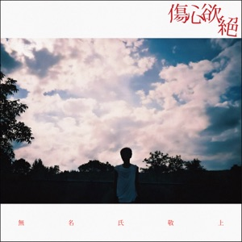
無名氏敬上
傷心欲絕
製作名單
製作人：錢煒安
噪音公寓
拍謝少年
製作名單
製作人：張勝為、謝宗翰、梁宏彰、周已敦
Hotel La Rut (破爛酒店)
王若琳
製作名單
製作人：王若琳、Adam Lee
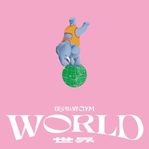
世界
大象體操
製作名單
製作人：大象體操
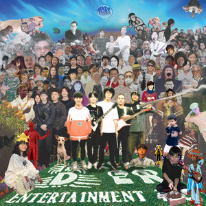
The Great Bremen Show
布萊梅
製作名單
製作人：吳羿緯
最佳樂團獎
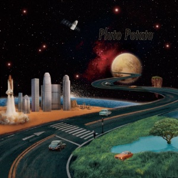
Pluto Potato
Plutato
無名氏敬上
傷心欲絕
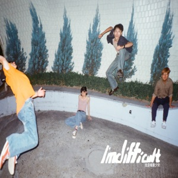
I'mdifficult
我是機車少女I’mdifficult
噪音公寓
拍謝少年
世界
大象體操
The Great Bremen Show
布萊梅
最佳創作歌手獎
心
阿跨面
陷眠
江惠儀
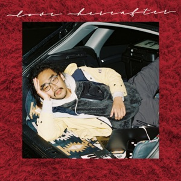
Love Hereafter
Dac
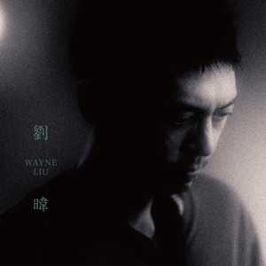
劉暐個人專輯
劉暐
Hotel La Rut (破爛酒店)
王若琳
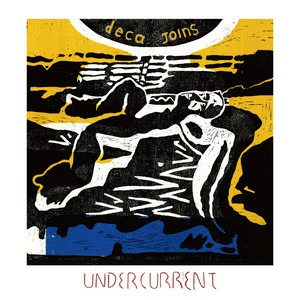
暗流
鄭敬儒
最佳新人獎
Pluto Potato
Plutato
心
阿跨面
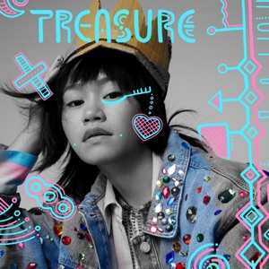
寶藏Treasure
Makav真愛
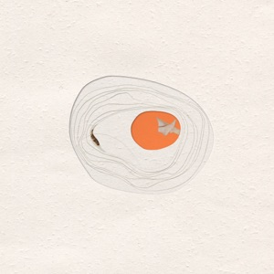
繭的形狀
邱淑蟬
Study (of) Breaks
Flowstrong
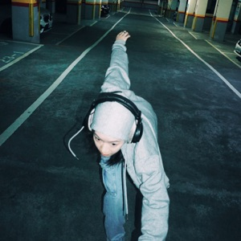
Hidden Card 藏招
Andr
最佳樂手獎
Pluto Potato
鄭嘉富
樂器：鼓、鼓機、音效
製作名單
樂器：鼓、鼓機、音效
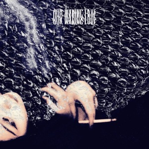
Our Waning Love
謝明諺
樂器：薩克斯風
製作名單
樂器：薩克斯風
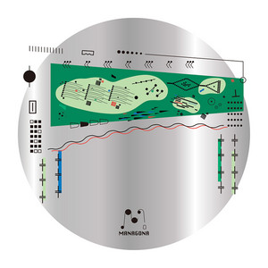
草本藥師
李茂嵩
樂器：電子合成器、木琴、打擊樂、 爵士鼓
製作名單
樂器：電子合成器、木琴、打擊樂、 爵士鼓
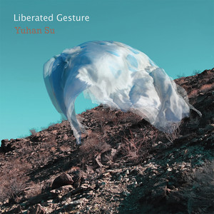
自由的姿態
蘇郁涵
樂器：鐵琴
製作名單
樂器：鐵琴
夜婆 Iā-Pô
柯智豪 Blaire Ko
樂器：吉他(木.電.古典)、鋼琴.鍵盤.合成器、低音提琴、Bass、和聲、打擊、天鼓手碟、手風琴、管樂等
製作名單
樂器：吉他(木.電.古典)、鋼琴.鍵盤.合成器、低音提琴、Bass、和聲、打擊、天鼓手碟、手風琴、管樂等
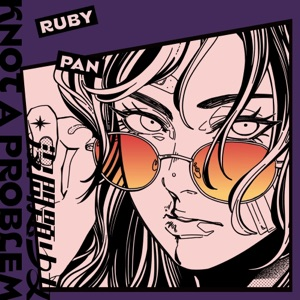
沒問題少女
潘子爵
樂器：薩克斯風
製作名單
樂器：薩克斯風
世界
張凱婷
樂器：貝斯／ 人聲／和聲
製作名單
樂器：貝斯／ 人聲／和聲
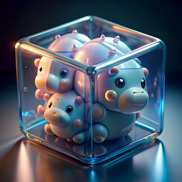
幾何碼
簡聿民
樂器：爵士鼓
製作名單
樂器：爵士鼓
最佳現場演出獎
“Is It Alive?”
Robot Swing
Snack
Dac
Legacy Presents【2023都市女聲】：MANDARK《be a “BADA88”》首場個人專場演唱會
MANDARK
deca joins 2024首演 天堂與泥土 / Heaven ＆ Dirt
deca joins
TRASH《HOLY TRIP! 精神時光屋》高雄演唱會
TRASH
亞洲創作音樂獎
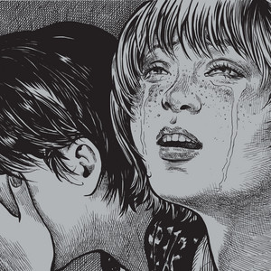
Dapple Patterns
假日貞操
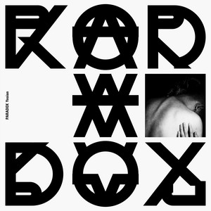
悖論
黃業圓
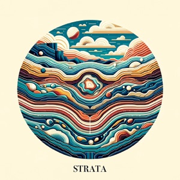
STRATA
LITE
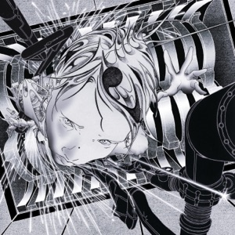
POWER ANDRE 99
Silica Gel
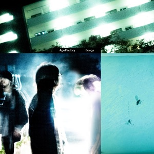
Songs
Age Factory

Dab Hi
NaraBara
類型音樂獎項
14 個獎項最佳搖滾專輯獎
無名氏敬上
傷心欲絕
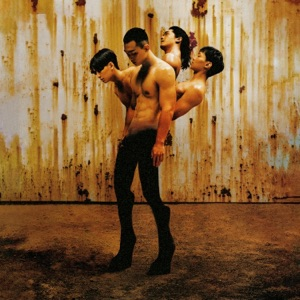
姿態
傻子與白痴
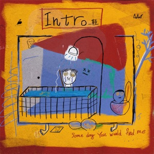
Intro_鞋
溫室雜草
噪音公寓
拍謝少年
世界
大象體操
最佳搖滾歌曲獎
大雨
傷心欲絕
遠慮
傻子與白痴
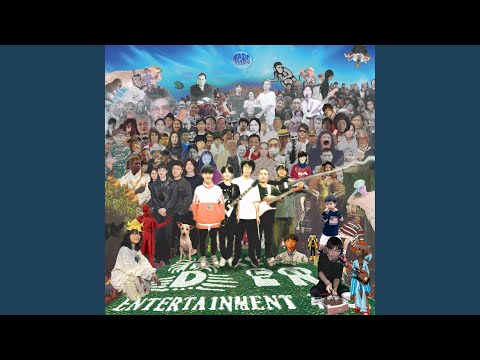
Peace and Quiet (Bremen announcement)
布萊梅
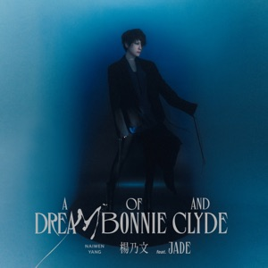
A Dream of Bonnie and Clyde feat. JADE
楊乃文

萬物皆欲
JADE
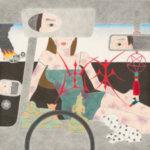
出來
百合花
最佳民謠專輯獎
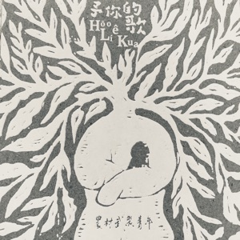
予你的歌 Hōo Lí ê Kua
農村武裝青年
繭的形狀
邱淑蟬
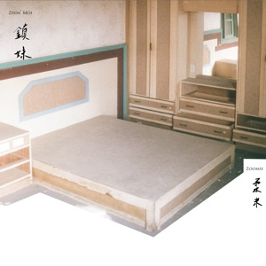
鎮妹Zhin‘ Moi
柔 米 Zoomie
夜婆 Iā-Pô
巴奈 Panai、柯智豪 Blaire Ko
劉暐個人專輯
劉暐
最佳民謠歌曲獎
阿母的話 A-bú ê Uē
農村武裝青年
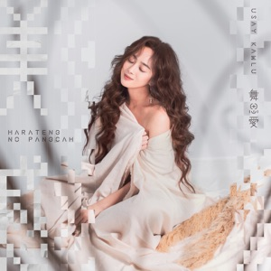
Niyaro' 家鄉
舞思愛 Usay Kawlu
所在
邱淑蟬
鎮妹Zhin‘ Moi
柔 米Zoomie
吊樹頭 Tiàu Tshiū-Thâu
巴奈 Panai、柯智豪 Blaire Ko
也許我見不到你了
劉暐
最佳嘻哈專輯獎
心
阿跨面
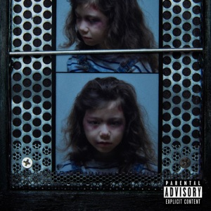
BS
wannasleep & Gummy B
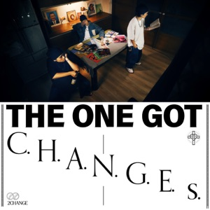
THE ONE GOT C.H.A.N.G.E.s.
2CHANGE
Love Hereafter
Dac
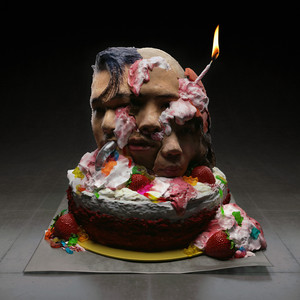
三不管
SmashRegz
最佳嘻哈歌曲獎
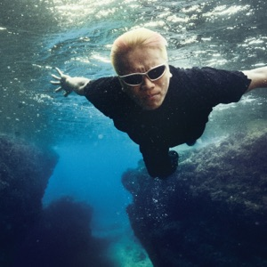
陷眠
阿跨面
ABC
wannasleep & Gummy B
製作名單
共同創作人：熊仔
熬辣醬
Flowstrong
製作名單
共同創作人：DaBao 大寶
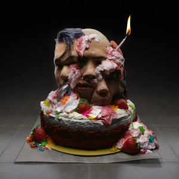
如何三天內成為饒舌歌手？
SmashRegz
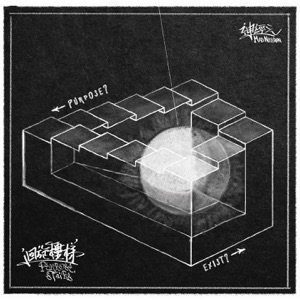
不眨眼的人
神經元
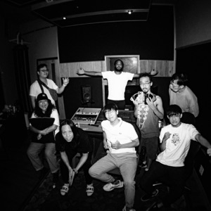
One More (feat. LEO37, DCIV, Dac, Lazy Habits, Star Wu, 謝明諺)
Robot Swing
製作名單
共同創作人：DCIV
最佳電音專輯獎
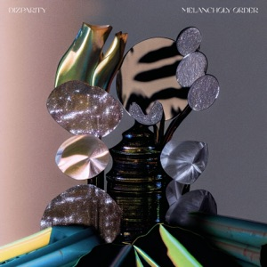
淒惻秩序 Melancholy Order
Dizparity
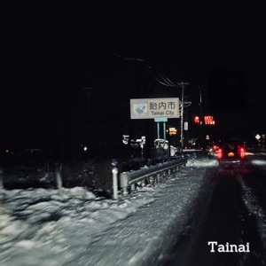
胎內
呂紹淳
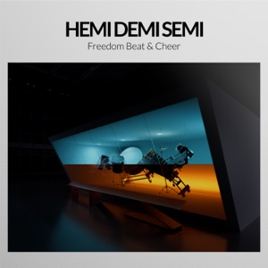
HEMI DEMI SEMI
Freedom Beat & cheer
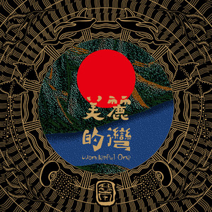
美麗的灣
笑琴
最佳電音歌曲獎
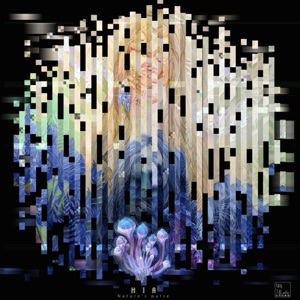
fakeloh 石化
幽法
自我排空 Kenosis
Dizparity
宇
呂紹淳
在石頭縫隙間
Freedom Beat & cheer
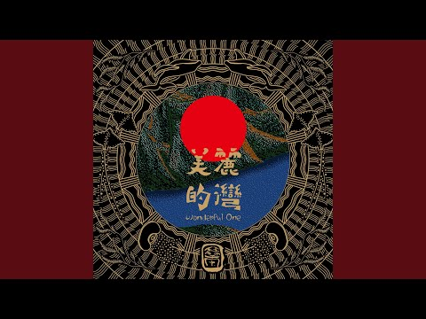
美麗的灣
笑琴
最佳爵士專輯獎
Pluto Potato
Plutato
Our Waning Love
謝明諺
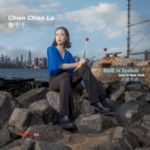
內建系統
魯千千
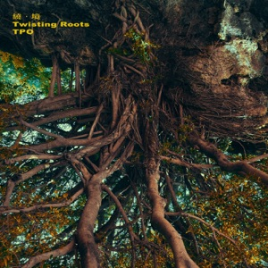
繞．境
踢霹歐爵士大樂團
最佳爵士歌曲獎
Chamakana
謝明諺
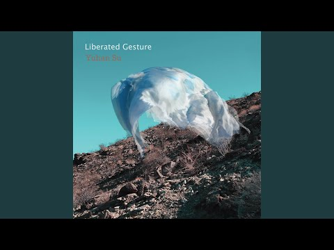
她去了一場寧靜的戰爭
蘇郁涵
夢幻曲
魯千千
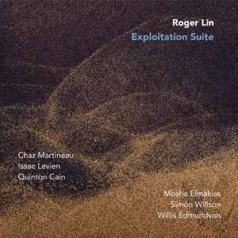
Exploitation Suite Part I: They’d Like to Support
Roger Lin 林煒翔
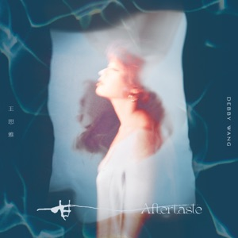
大醉八仙 feat. 磐宇木偶劇團
Debby Wang 王思雅
最佳節奏藍調專輯獎
寶藏Treasure
Makav真愛
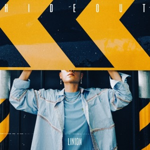
HIDEOUT
LINION
簡單一句話
鄭平
我在這裡
問題總部
最佳節奏藍調歌曲獎
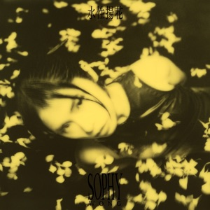
RACE OF FAITH ft YELLOW 黃宣
SOPHY 王嘉儀
Adddicted (feat. Karencici)
孫盛希
Beach Song
Dac
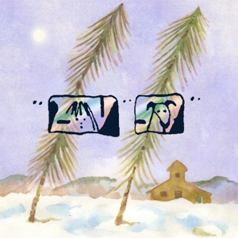
WET/DRY
問題總部
SEX TAPE (feat. 落日飛車)
ØZI
最佳另類流行專輯獎
水性揚花
SOPHY 王嘉儀
種子
舞炯恩 Utjung(舞炯恩加以法利得)
I'mdifficult
我是機車少女I’mdifficult
Hotel La Rut (破爛酒店)
王若琳
The Great Bremen Show
布萊梅
最佳另類流行歌曲獎
野獸派
9m88
Little More Time
Dac
Last Summer (月亮惹的禍）
我是機車少女I’mdifficult
She Had a Habit of Meeting All of the Artists Backstage (她有一個習慣在後台跟藝人見面)
王若琳
羽毛 (feat. 壞特 ?te)
大象體操
製作名單
共同創作人：壞特 ?te
Jhalleyaa (feat. Shashaa Tirupati)
大象體操
Castle
布萊梅
評審團獎
1 個獎項評審團獎
劉暐個人專輯
劉暐
找不到符合的作品，換個關鍵字試試。